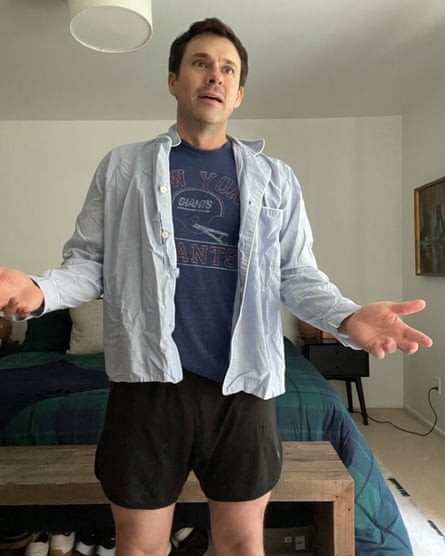
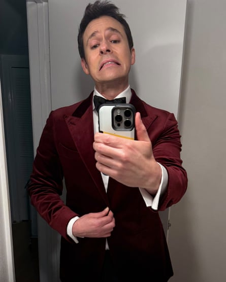
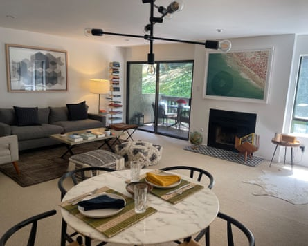

A bout a year after I moved into my apartment in Los Angeles, I was woken up by three loud knocks on my bedroom door at 3am. I thought there might be an intruder – but I got up, opened the door, and there was nobody there. I went to the front door, thinking I had misheard it, but there was nobody there either. I thought I had imagined it. Then it kept happening about once a week.
I thought it must be my upstairs neighbours, perhaps working a night shift, but after I introduced myself to them to ask about the noise, they assured me they wouldn’t be awake at that hour. I asked the man who looks after our 70s-built apartment block if there were problems with the pipes. He said no. At one point, I started putting my dresser in front of the door, because I was so scared. I couldn’t shake the idea that somebody was getting into my apartment, even though there was no evidence of it. I didn’t tell anyone for ages – because if I had, I would have had to recognise how crazy I sounded.
Bryan’s pre-ghost look.Photograph: Courtesy of Bryan Safi
Finally, I mentioned it to a close friend. I thought she would laugh at me, but she became very serious – it was, she said, a ghost. Worse – it was probably a demon. “Two knocks is a ghost, three knocks is a demon,” she told me, adding that I shouldn’t speak to it or acknowledge its presence because “it will just get bolder”. I didn’t believe in any of it, so I confided in another friend, hoping for a different reaction. She decided to buy me a session with a ghost hunter who claimed to “clear” such presences.
I thought the ghost hunter would come to my apartment, or at least arrange a phone or video call, but she just sent me an email saying she’d done whatever she needed to do, remotely. She had encouraged some spirits to leave, she said, but there were others – five, she thought – who wouldn’t go until they’d held what she called a “court of atonement”. They would be on trial in my home.
Post-ghost Bryan.Photograph: Courtesy of Bryan Safi
The ghostbuster said the trial was being held in my living room. When I moved into the apartment in 2019, my interior designer friend styled this room for me. I wanted a space I felt really great about, and it was beautiful, but I ended up feeling that it was too nice for me to spend time in. Other than the few times I had people over, I barely stepped into my living room, so it didn’t surprise me when she said the trial was happening in there, because it never really felt like mine.
I have always been an extreme people pleaser, and although I still didn’t genuinely believe five ghosts would be holding a trial in my apartment, I started to feel uncomfortable about them being there and judging me . They were, I assumed, old or from a different era, and it felt almost disrespectful to keep living as I was. So I started keeping my apartment cleaner and tidier, and stopped leaving drink cans around. I’d had a painful relationship breakup not long before, and had been having lots of hook-ups, but that stopped once I was aware of the ghost trial – or I stopped hosting them, at least. I stopped ordering fast food in the middle of the night and started eating better. I took up meditation, making my bed, and not hitting the snooze button. I wasn’t dressing for the formality of a courtroom, but I did start to take more care of my appearance. I didn’t believe that the ghosts were real – but if they were, I didn’t want to live badly in front of them.
The living room Bryan felt he didn’t deserve.Photograph: Courtesy of Bryan Safi
Soon, I noticed I was happier and more confident. The feelings of anxiety and guilt that I’d carried around all my life were becoming easier to manage. It was a ridiculous situation, but dealing with a ghost trial somehow made me feel as if I could deal with anything. I had grown up in a religious family, and embraced science and reason as an adult, but the experience made me more open-minded about things that couldn’t be explained.
I don’t know if the trial reached a verdict – it might still be happening – but, last spring, it finally felt as if the spirits left for good. The changes I made to my life, however, have largely remained, and I feel more content than ever. Buying the apartment had felt like an achievement – I had been saving for it for more than a decade – but also like something I didn’t really deserve. I’m a catastrophiser and it always seemed as if everything could just be taken away at any moment. Now, I feel weirdly bonded to my home, like we went through this together. Slowly, I’ve become more optimistic; I’ve realised it’s not a sin to enjoy something. And, thankfully, the knocking has stopped.